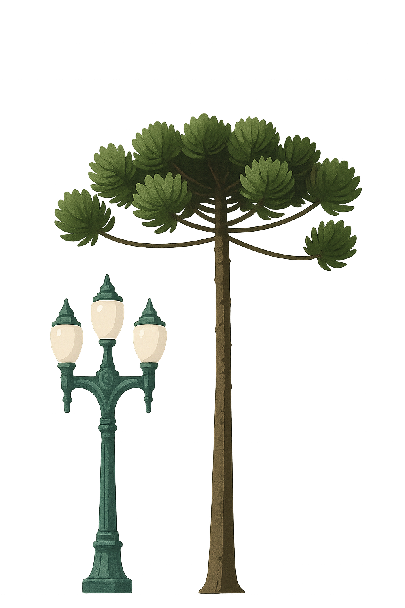

Quem Somos
O Urbalize nasceu por meio de um projeto de extensão da faculdade Uniopet, deselvolvido pelos alunos André Felipe, Bruna, Emanoelli Valentina, Evelyn e Naftali Ferrari. Com propósito de fortalecer a cidadania e estimular o engajamento social por meio da tecnologia.

Objetivo
Nosso objetivo é dar visibilidade aos problemas urbanos que impactam a qualidade de vida das pessoas e inspirar soluções coletivas, baseadas na cooperação entre cidadãos, comunidades e gestores públicos.

Lema
Acreditamos que cada registro é um passo em direção a uma cidade melhor — mais segura, acessível, limpa e justa.